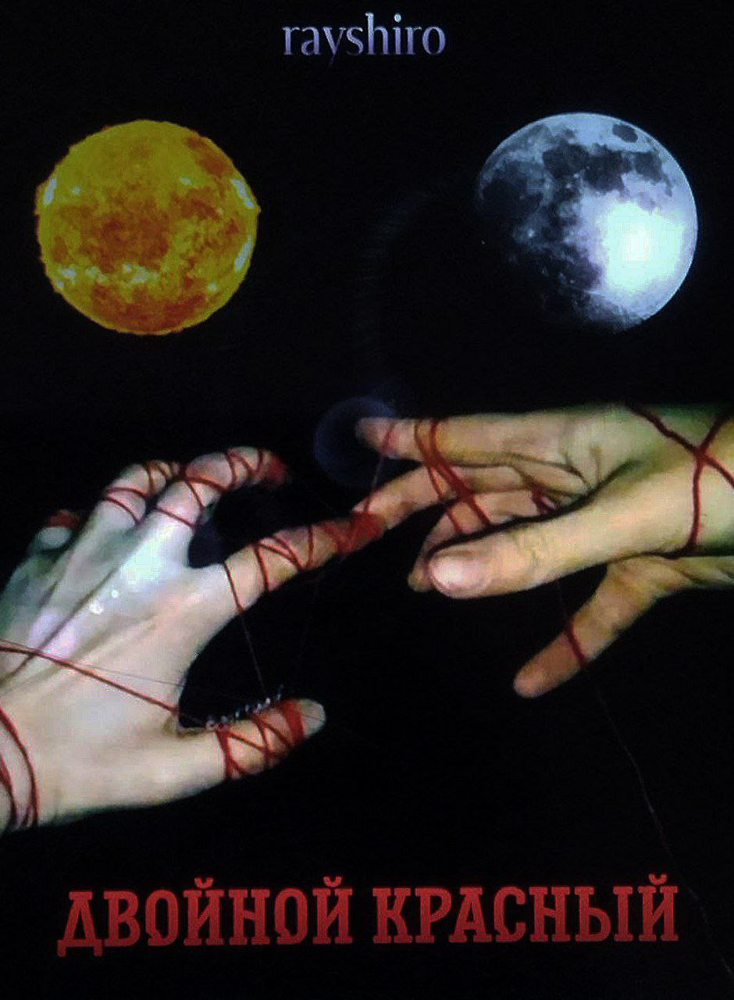
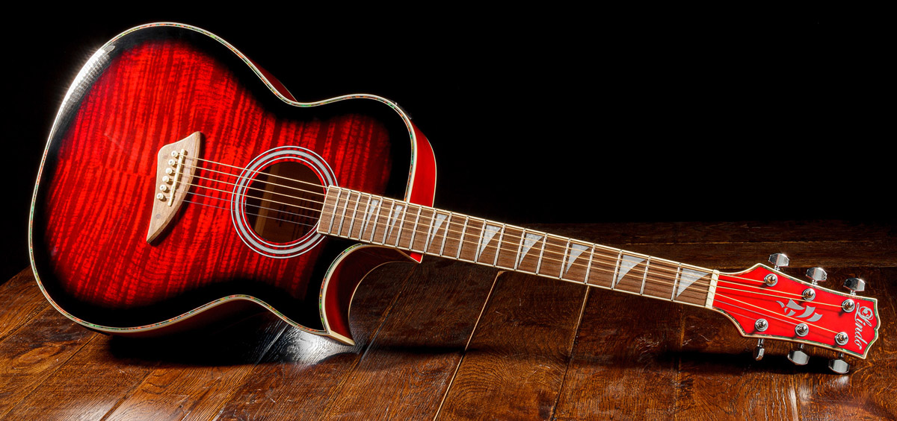

Web Dev
- Certainly, at first it is Web Development. It's very interesting and I like to discover something new for me and my brain

Writing
- I am writer. I love it really deep and my speciality is about it. I also like reading, but writing more. I like writing novels, one of my works is "Double Red"

Drawing
- Scenaries in my head have their view in my paintings too. I'm very in love with painting since I was child
Play on Guitar
- Unfortunately I start play guitar just at 17, as soon as I bought a guitar, but it was one of the most impotrant date for me. It's very calm and beautiful thing, I'm in big love with making music
